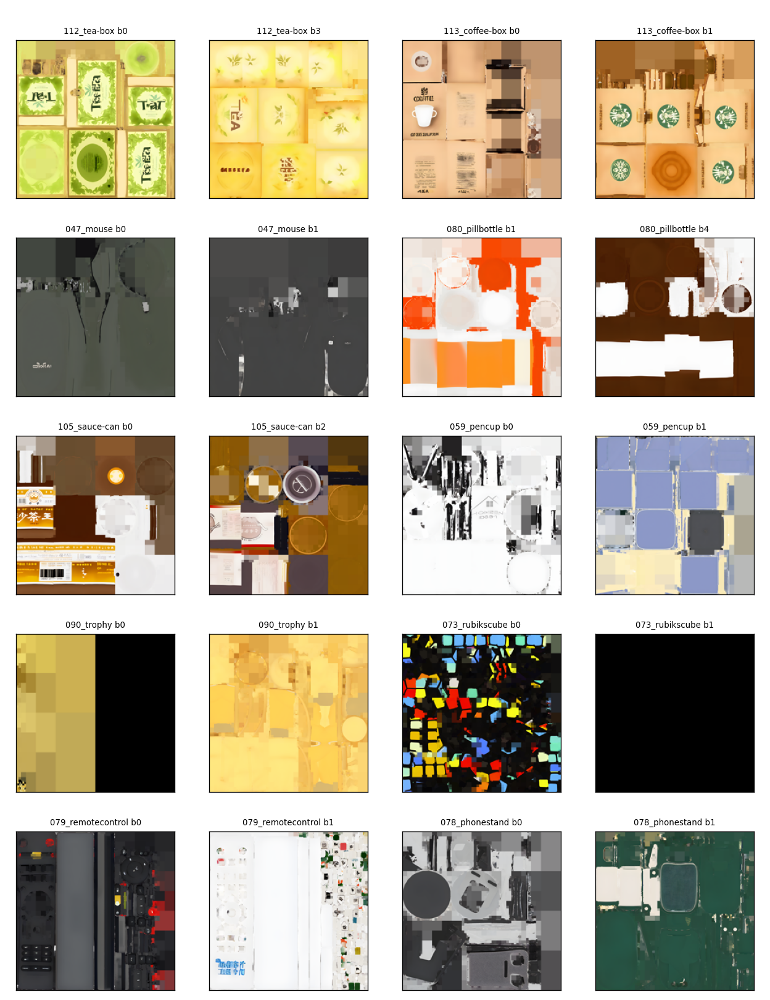
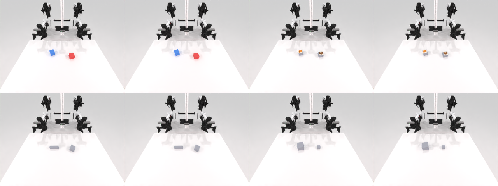

论文 RoboTwin-IF 的 5 个任务集是「任务内混合多维度」；IF-Ext 反过来做单维度拆分——每个任务只隔离测一个能力轴，方便定位 policy 具体在哪个轴上退化。同一场景成对生成（相邻种子像素同帧、只有指令变），使命名槽位成为唯一区分量。
下方每个卡片：核心描述 + 每个取值的真实指令 + 对照视频（同一场景，只变指令）。视频静音循环，点击可控制。
核心：同一个瓶子、同一套几何，只有指令里的动词变。诊断的失败模式是动词被「物体→惯用动作」先验盖掉（policy 学到 bottle→拿起，就无视「摇」）。两个动词都是 001_bottle 的 native 动作 → 都在能力库内，不会塌成 OOD。
{V}（pick-族 / shake-族）核心：唯一区分量是类别名词，干扰物是不同类别。它是 Attribute-Select 的对照基线——policy 连这都挂，说明是最基础的名词 grounding 问题，而非「用不上视觉特征」。价值是比较性的。直接复用原 pick_diverse_object 的物体池与抓取参数。
↑ 每局点名一个类别、其余同框物体是跨类别干扰物；clip 取自复用的 pick_diverse_object 基座（现成物体池 + 抓取参数）。

pick_diverse_object 快照）—— Noun-Grounding 从中抽不同类别做目标/干扰{A}；干扰物必须跨类别、被点名类别场景里只有一个核心：物体其余特征全固定，只有一种视觉特征是区分量。按特征型分 4 个独立 mode，分 mode 统计成功率：某 mode 骤降 = policy 用不上那一类特征。全部用 primitive（create_box/sphere/cylinder）生成，特征是写死的、不用反推 → 自包含。

{ADJ}；seed%4 定 mode（color/decal/shape/size）、seed//4 定场景核心：指令显式指定「用左臂/右臂」，物体落在双臂重叠区、固定 x=0（几何完全不泄露答案）。测 policy 是否服从指定臂，而不是「哪只手方便用哪只 / 总用惯用手」。臂词是唯一区分量。
{a}（the left / right arm）核心：三块彩色积木堆成一塔，bottom→top 顺序由指令给定；填顺序槽位的颜色每局都变，所以顺序词是唯一信号。诊断的失败模式：policy 把三块都堆上去了但无视顺序（「顺序盲假阳性」）。
{A}/{B}/{C} 是位置，非固定颜色）核心：把 mover A 放到 reference B 的指定方位；同一物理场景可容纳全部 5 个方位，锚点/被放物固定，只有方位词决定正确落点。左右=带符号 x 轴、前后=带符号 y 轴（以机器人朝向为准）、上方=z/align。下面 5 段是同一 mouse+coffee-box 场景。
{D}（left / right / front / back / on top）核心：物体固定、同一初始位姿，动词都是「抓」，唯一区分量是抓法词（从顶部 / 从侧面）。测 policy 是否服从指定接近方向，而不是默认用自己最省力的抓法。两种抓法末态夹爪朝向一眼可分。
{D}（top-族 / side-族）015_laptop 开/关，从 50% 共用中间态起验，N=20 开/关各 90%（可靠子集变体 {1,9}）。已被 bottle_verb 取代为 Verb-Select 主版：close 是全 native 里唯一没演示过的闭合动作 → 对 zeroshot/native-ft 是 action-OOD，二值判据下 close=0 无法归因（「没读动词」vs「执行不出」）。仅 ifext-ft 协议下有效。
scene_seed = seed // k 定场景、mode = MODES[seed % k] 定该轴取值 → 相邻种子对是同一物理场景（同变体/位姿），只有指令不同。评测跑连续种子即拿到像素同帧、仅指令变的对照局。这直接落实「单轴对照对必须同场景」——物体位置若与答案相关，policy 不读指令也能刷满分。
IF 诊断的前提是被测行为对模型可执行；否则二值判据下失败无法归因，IF 塌成 OOD 泛化。Arm / Grasp / Sequence / Spatial / bottle-Verb 均为 native 能力库内行为；laptop close 是例外（见上「备选 / 受限」）。
| # | 轴 / env | 取值 | 状态 |
|---|---|---|---|
| 1 | Verb-Selectbottle_verb.py | pick / shake | 就绪 |
| 2 | Noun-Grounding复用 pick_diverse_object | 类别名词 | 计划·复用 |
| 3 | Attribute-Selectattribute_select.py | color / decal / shape / size | 开发中 |
| 4 | Arm-Selectarm_select.py | left / right | 完成 |
| 5 | Sequencestack_sequence.py | bottom→top 顺序 | 完成 |
| 6 | Spatial-Directionplace_relative.py | left / right / front / back / on top | 完成 |
| 7 | Grasp-Approachgrasp_cube_approach.py | from top / from side | 完成 |
视频为各任务 evidence/ 的精选副本（存于 ./assets，本文件夹自包含、可整体分享）。
单任务完整 spike / Layer-B 证据见对应 notes/…/report.html；
设计全文：docs/features/09-IF-Ext-单轴扩展任务集设计.md。